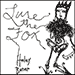
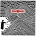
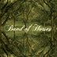
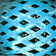
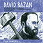
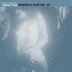

October 28, 2006
The Winter Blanket played their release show last night. All went well. Everything got to a late start due to the entirity of the band Duplomacy watching the world series on the bar TV. As soon as the strikeout was completed the 5 piece took the stage... All the bands sounded really great. Duplomacy had one of their better performances I have seen. It sounded like they have spent a lot of time practicing lately. The Winter Blanket played a nice set, they really sound great. Vocals are a little weak at their live shows, but the instrumentation always sounds great. Kid Dakota was on the ball as per usual. Ian Prince, taking drumming duties over for Chris Mcguire, is probably the sweatiest man on the planet. At the end of their forty minute set, it looked like Ian had just stepped from the shower while fully clothed. His hair was dripping wet, shirt soaked, it is actually sort of amazing that a human can sweat so much...
October 17, 2006
Booking Bands is a site I came across one day at work surfing design-y websites for inspiration. This came up and wham!, I thought it was something I should share. Basically, this design firm with chalkboards in the bathrooms started an inter-office game where you mash up your favorite book and band titles. I have included the link in the Bands, Etc. section, and maybe you can come up with your own combos and share them with your friends, or maybe make a t-shirt or something. My personal favorite was "Tom Petty and the Heartbreaking Work of Staggering Genius" - wow.
I have been hard at work with the band The Winter Blanket coming up with a re-design for their website, and some new t-shirt ideas. The website is finally up, some shows have been scheduled, and everyone in the twin cities should come out on the 27th of October to their CD release show. They have a new line up, they have been practicing a lot, and they will have some cool shirts to sell. Be there. Check-out blanketmusic.com for more info (and to see my handy work).
I missed Mark Kozelek, damn you Williams-Sonoma, and i am still cursing myself for it

There is something about South Dakota that seems to drive people into severe sadness. If you have listened
to any Kid Dakota records, you may know what I am talking about. Haley does have a way of making the melancholy cute however
(a glance inside the album jacket shows her grinning a bright smile with a cheerfully green windbreaker on). She plays
a style of music that i really feel comfortable listening to. I may say that the overall feel is down, but that does not
mean that there is no pep on this record. The guitar tones and the rich organ notes, along with the style of singing
all have a watery sadness in them, but the overall tone keeps itself floating above suicide level. The arrangements are a
nice pairing of sparce, simple drums, very lovely vocal stylings, nicely distorted electric guitars, and full
sounding acoustics. Everything just sounds beautiful. It is strange how sadness in music can carry so much beauty in it.
Maybe I just like being depressed, but I will stand by this statement: “the most beautiful music is music that has
come from pain and sadness.” This record is a great work of simplicity. The orchestration is not overly complex, there
are no shiny extras to show off whatever gear the band and engineers has laying around, just simple, lovely music.
(simple, lovely music shows off the gear and talent the bands and engineers have too... perhaps in a better way)
I was having a discussion about this with my father actually - my point was about simplicity making beautiful
art, and that being a master is more about knwing when to leave things blank rather than filling them in, and he made a similar anaolgy
in music. To me this record speaks to that truth. I really love it, and part of what I love is the basic and emotive
approach that it takes to delivering the music. There is nothing to get between you and the songs. Each song creates
a nice build without becoming redundant. The vocal
harmonies and buttery organ parts are there to add the the delivery. Oh, and she has the
ability to write pleasant and non-cliched song lyrics which flow nicely. Haley creates some beautiful imagery.
My favorite tracks are probably Us and Give It Up,
Visit her site at www.haleybonar.com and see what all my hype is about.
Sidenote: Nancy went to high school with Haley, and there is a picture of her singing a Fountains
Of Wayne song in one of the year books. Just note in your brains that you can even turn into a despondant
twenty-something by listening to jangly pop music.
 Holy shit. I was prepared to be very underwhelmed by this recording. Instead, it overcame all my preconceptions and really impressed me. The sparse, electronic direction that Yorke has taken on this record is a departure from the epic orchestration that Radiohead has been slowly churning out since Kid A. OK Computer makes it onto my top 10 without a second thought, (The bends is great too, and I think underated), and have listened without much pleasure to everything since then. This album renews my commitment to liking Thom and the gang. Maybe it is because I was incredibly into electronic music in the past, or just that I am a minimalist down at heart, who knows. The point is that I am sold on this album as a valid addition to the indie catalog. The lo-fi samples mixed with crisp and clean percussion, the effected background vocals, the minimalist compositions, the lyrics, they all speak to me in a voice that says “i'm good, enjoy me!” and so I have been. This is problem with Thom Yorke and Radiohead as I see it: once you make an album like OK Computer where is there to go? OK Computer is an awesome example of the experimental rock album. There are only a handful of options now available to you: you either make it again (which is not cool so scratch that), go backwards and make a record that rocks harder, or go a step forward with something even more experimental. Now, Radiohead may lay down some rocking tracks, but they certainly are not going to morph into another zepplin or who or black sabbath. Logically the choice is to go more experimental, and hope that the fans you have garnered with your previous albums will come along and enjoy the avant garde ride. They lost me in their transition and I do not really enjoy their newer works, but I do not fault them for it, I enjoy the idea that they are trying to push some musical envelope, I just do not happen to have enjoyed it fully. Perhaps now that I have taken the time to explain it all to myself I have the impetus to try. Rambling now aside, go and listen to The Eraser.
 The next album I have to gush over is Everything all the Time. If you have yet to listen to Band of Horses, do yourself a favor and do it. I was told on numerous occasions to give this a listen - not wanting to believe that it would actually be good, did not - until now! The wall I had built to keep out the sounds of Band of Horses was finally broken after visiting their very nice website and downloading their mp3's. I then bought the album. Picture Oh! Inverted World era Shins, a healthy dose of the Arcade Fire, the vocals from a My Morning Jacket song, and voila! you get a decent idea of what this record sounds like. They kick the record off with a song aptly titled The First Song after which they take it up a notch with Wicked Gil. The Funeral, track 4, is probably their most played "single." The Great Salt Lake is an epic start to the second half of the record, followed by the most playful and good-times-indie-rocking-and-rolling song off the record, Weed Party. The last few tracks wind down to a sleeper of an ending in St. Augustine, which though a lovely song, does not in do the right sort of justice to the rest of the tracks. All-in-all a very nice full-length from Band of Horses, and it keeps the interest up as to what they might do next.
 Tommy is a rock and roll classic. There, I said it. Before the pedophilia charges, before being banned from all holiday inns, before the rhythm section ended up under ground, there was Tommy. Pete Townsend's crowning rock achievement, besides the windmill move... Tons of rich orchestration, rock and roll, pinball, story born out of a drug trip, what more could you ask for? I recently re-watched the feature film version, and that spurred my renewed interest in the album. The theatrical version contains spots by Eric Clapton, Tina Turner, Elton John, and of course The Who. The album features Roger Daltry singing all parts that would later be filled by the greats I just listed. My preference is for Roger Daltry. Maybe it is the distance in time seperating the film from the album, but Roger's voice carries much more weight on the songs than any of the later guests. (take for example Elton John's Pinball Wizard... need i say more?) In addition to Tommy, i also have been playing Meaty, Beaty, Big and Bouncy, and older English import Who greatest hits album. Go hear yourself a Who.


A few notes on the new albums I freshly picked up:
(1) David Bazan's new EP carries on the sounds from his last Pedro the Lion
work, and has some of the electronic sounds from his Headphones recording. Included on the 5-song EP are some of
the acoustic tracks that were presumably demo or scratch recordings from the beginning of the sessions. My original
preference was for the acoustic tracks, but after subsequent listenings (and hearing the demo tracks and final
tracks side by side), my preference is changing. One gets a nice sense of the songs beginnings from the acoustic
tracks, and by following them up with the final recordings, you get the vision the demos inspired. Bazan has ditched
the Pedro the lion title, and will now be recording / performing under his own name. Also, the new album has some
really nice artwork by Zak Sally, former bassist of Low.
(2) The Magnolia Electric Co. album (They'll always be songs:ohia
to me... everytime i start to talk or write about them, songs:ohia comes out first...) is beautifully done as
per usual. The songs are very nice, and the sound of the band continues to be more and more refined.
Anything new on the horizon for next month? anyone going to blow me away with some sweet new tunes? talk to me people, I need a new fix. A thank you is in order to one Drew Brockington who not only delivered this months' top ten list but he also lent me some albums to listen to... the new Thom Yorke being one of them. I have got a top ten for November from one Karsten Lund, but anyone of you could be Ms. December (or i suppose mr.). Cordially Signing Off
Thanks for reading,
Kristian
©2006 kristian bjornard * itempimoderni